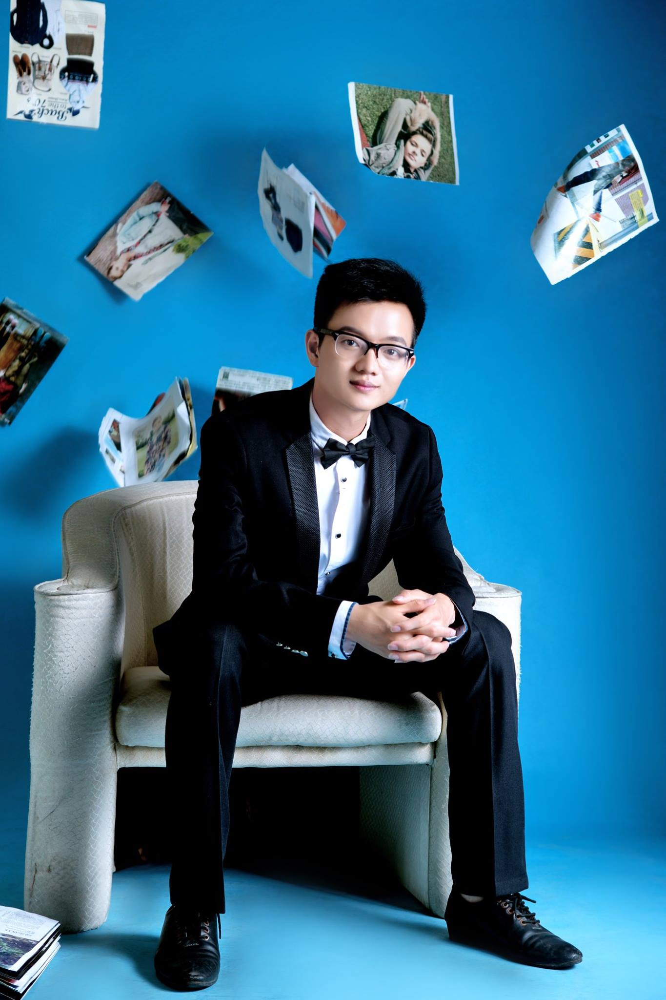

The model isn't the product anymore. The harness around it is.
The model finished your line. You stayed in the driver's seat the whole time.
You copied code out of a side panel. The model never touched your project.
It reads, edits, runs, and checks — across many files, on its own.
Token → message → task. The unit of work keeps getting bigger, and the endpoint is autonomy — today's theme, arriving in developer tools.
In dev tools, autonomy looks like three things
It lives on your machine, on top of the real toolchain — not in a sandbox tab.
Not one assistant. A fleet you orchestrate, that checks its own work.
The right model for each sub-task. Routing, not marriage.
A browser agent rents a room in someone else's house. A native agent owns it — your files, your processes, your whole toolchain, with nothing lost on reload.
The sharpest proof: try building an iPhone app in a browser tab. You can't. It needs Xcode, a simulator, code-signing, a device — and it's where LingCode is especially strong.
The next leap isn't a smarter single agent. It's many agents you orchestrate — fanning out independent work, then folding it back together, with verification built into the loop.
Cheap-and-fast for mechanical edits. Frontier reasoning for the gnarly parts. A long-context model for the big refactor. Lock-in is a quality tax — and a business risk.
LingCode routes across 16 providers — the model becomes a swappable part, not the foundation.
project TodoService component Store goal In-memory store of todo items. test add("milk") returns an int; adding again returns a new id. test a removed id is no longer listed.
Plain acceptance criteria — readable by anyone, and the durable asset. The model writes the tests & the code; the gate just runs them. Any model, any language.
Quinny — my open-source coding CLI (pip install quinny, Apache-2.0) — wraps any model in a verify-loop. Here's one weak model on one task, with and without it:
Same model, same task. The harness turned an unstable coin-flip into a reliable 100%. That's the thesis — the harness is the product.
Native + multi-agent + verification, together: an agent that reaches the Apple toolchain, splits the work, and shows you a running app — not a diff.
End on the idea, not the error: the browser tab can't do this at all. That's the wedge — and where the whole industry is heading.
The value is in the harness that reaches your real toolchain — not the chat box.
The skill of the next decade is directing a fleet of agents that check their own work.
Stay provider-agnostic. The best model for the job changes every month.
The native Mac AI IDE — real iOS & macOS apps, multi-agent, provider-agnostic.
lingcode.devA tiny native code editor with the agent built in — the whole loop, minimal surface.
lingcode.dev/baby.htmlA native macOS FTP/SFTP client with the agent built in — edit and ship over the wire.
lingcode.dev/ftp.htmlCustomer scaling & partnerships at Atlas. Then head of research at a military-drone startup. Raised for and built a marketplace connecting businesses with manufacturers in Vietnam — stepped away from it to start this.

15 years in mobile development, 10 years tutoring. Built & launched 200+ apps. Inventor of Quinny — the harness this whole talk is about.
Try it → lingcode.dev